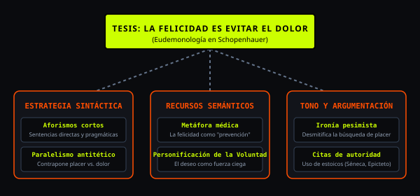

Recursos Literarios y Estilísticos

Para articular la tesis de Schopenhauer de que la felicidad consiste esencialmente en la habitación del dolor, él despliega una cantidad de herramientas que combinan una precisión técnica con un peso filosófico. Su obra se estructura bajo tres dimensiones fundamentales que guían el lector a través de su texto. La primera es la estrategia sintáctica. El autor prioriza la contundencia y el peso de los textos mediante el uso de estos mismos, pero de manera corta, las cuales funcionan como formas directas de representar un concepto, muy pragmáticas, por cierto, y que además están diseñadas para evitar divagar y atacar la ilusión de una forma inmediata. Para reforzar esta lógica, utiliza algo llamado el paralelismo antitético, una estructura que hace que se contrapongan constantemente los conceptos como placer contra dolor, exponiendo así la fragilidad de estos mismos. El lenguaje trasciende lo meramente descriptivo y esto entra en la categoría de los recursos semánticos y se convierten más bien en una herramienta para el análisis. Él destaca el uso de una metáfora médica en la cual el ejercicio filosófico es concebido más como una forma de preservar para salvar al sujeto de angustia existencial. Asimismo, Schopenhauer emplea la personificación de la voluntad, poniéndola como si fuera algo material y no como un estado mental, representando así el hecho de que es una fuerza que gobierna al individuo. El estilo y el tono es irónico, es pesimista e irónico a la vez. Uno pensaría que muy probablemente no se usaría así, pero la verdad es que sí lo hacen. Realmente lo usa como un recurso para desmitificar una búsqueda de placer que es muy muy superficial en la sociedad. Esta postura no es algo aislado, sino que se fundamenta mediante el uso constante de citas de autoridad como otros filósofos. Séneca y Epicteto son varios autores que aparecen como ejemplos dentro de las obras.